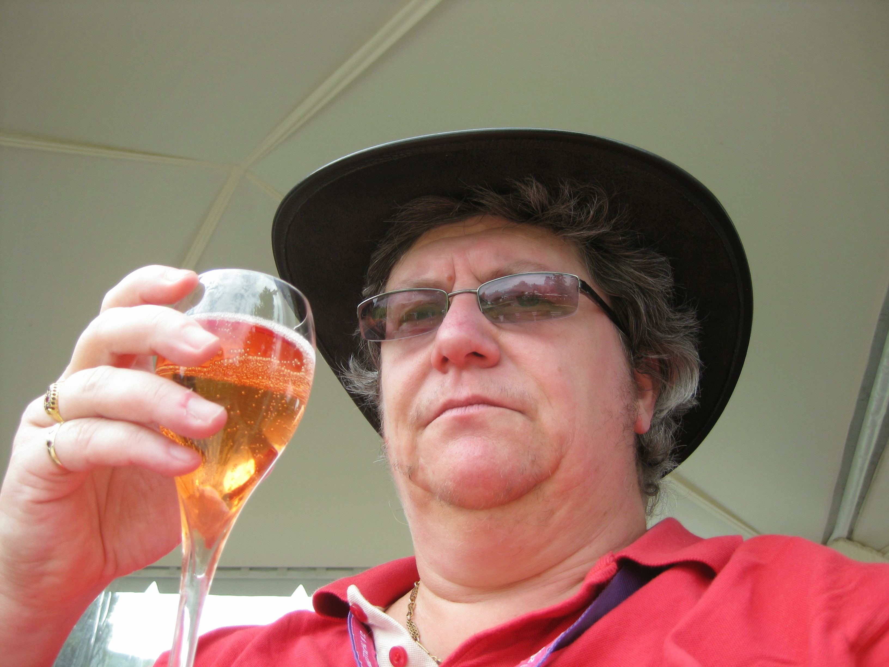
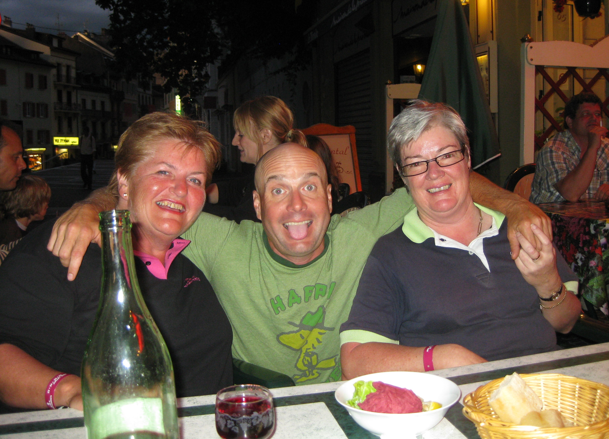

|
|
|
|
Evian Masters - Friday July 24th - Day 2
Up at the course, sat for a bit in the grandstand at the back of the 5th green. It was a bit cooler today and I was in the shade, so having checked out the scoreboard, I picked up Juli Inkster's group teeing off on 6. Juli hit her tee shot and immediately shouted "Godammit". Hope her kids were not nearby. Wandered back to the 5th to see Ms Wie's group play through, then went back to the first tee to see Sophie tee off. Watched Tutta's group tee off and followed them down the sixth. JiYai hit her tee shot into the left rough. She misjudged or mishit her second shot, hit the tree branch in front of her, and ended up in the middle of the fir tree. I took some great shots of her and her caddie trying to work out what shot to play. In the end she managed to get inside the tree without breaking any branches, and bunt it back out into the fairway.
{kind=link}
Caught up with Lorena playing the 15th. Managed to video her teeing off on 16. Followed her on through 17 and partly through 18. Coming around the back of the 18th grandstand, I realised that the SB symbol on my pass stood for Skybox which was the area above the 18th grandstand seats. Went up to have a shuftie. Found out that not only were there comfy seats with a view of the 18th green, but free beer and free Veuve Cliquot!
Having had my liquid lunch headed back out to the course. Yani Tseng was signing autographs by the scorers hut. Saw Helen Alfredsson, Pat Hurst and Maria Hjorth tee off on the 6th before heading over to the first tee to see Becky Brewerton tee off. Told her to "Have a good one today". She had two Korean playing partners, Na Yeon Choi and Inky.
All three of the caddies in Becky's group had the yellow bibs on which Kent Nilsson, Alfies Hubby/caddy was wearing yesterday. The leader of the tournament gets the yellow bib. Realised looking at the giant scoreboard in Place Annika Sorenstam that the flags flying also take into account the leading players. Yesterday it had been the Swedish flag but today Y Ddraig Goch was proudly hanging next to the Korean and Evian Masters flags.
 Headed back to the Skybox for another few beers and Veuve Cliquot rose drinks. Saw LD finishing off on the 18th green. She was on level par so safely making the cut but likely to be off earlier tomorrow than she would like. Decided it would be good to pick up Becky's group out by the 14th green. Walked past the 15th where Morgan Pressel was playing with Diana Luna and Candie Kung. Got to the 14th green in time to see Karrie Webb, Momoko Ueda and Ai Miyazato. Moved over to the 15th tee to see them tee off. Got a quick nod of acknowledgement from Terry Mac. The crowd following the Karen Stupples group was enormous because her playing partner was the French girl Karine Icher.
{kind=link}
Becky was having another great day, 6 under for the round and 11 under for the tournament. She hit a bad tee shot on the par 5 15th. It was way left and had a tree impeding her progress. She advanced it as far as she could up the fairway but had a very long shot for her third. She came up just short of the green on the right hand side in the first cut of rough. She hit a lovely chip shot up onto the elevated green that left her one of those length puts for par. She made it and looked mightily relieved to scramble the par save.
At this point the weather started to move in. The sky was getting darker and darker and there was thunder and lightning happening on the Swiss side of Lac Leman. Decided to call it a day. It was absolutely p**sing down when I was dropped at the end of the Rue Nationale. The weather meant it was now impossible to see the other side of the lake. Luckily the storm cleared off before dinner time.
Went for a quick wander before starting the evenings' eating and drinking. Spotted a Korean player and Colin Cann, Paula Creamer's caddie in the laudromat. The two Aussie lasses met up with us at L'Embuscade bar. They were a little damp because they had had to queue up for the free shuttle bus down into town. Eat once again at the Brasserie Continental, having spotted Lisa Hall having dinner with her husband.